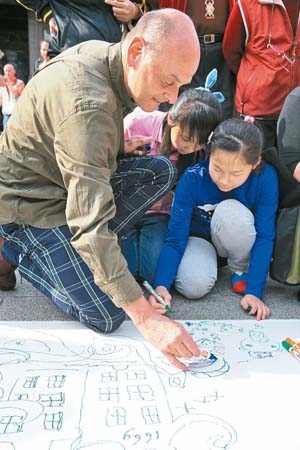

荷蘭藝術家 被李梅樹感動
劉宛琳｜聯合報／新北市．運動∣2015年3月29日
來自荷蘭的廣告藝術家Peter，幾年前來台灣玩時，意外在報紙上看到李梅樹的繪畫作品，深受李大師細膩真實的繪畫技巧所感動，原本畫風屬於野獸派的他，漸漸轉為寫實派；Peter昨參與梅樹節開幕活動─「動物派對」現地塗鴉創作，與小朋友一起在大畫布上作畫。
來自荷蘭的廣告藝術家Peter，幾年前來台灣玩時，意外在報紙上看到李梅樹的繪畫作品，深受李大師細膩真實的繪畫技巧所感動，原本畫風屬於野獸派的他，漸漸轉為寫實派；Peter昨參與梅樹節開幕活動─「動物派對」現地塗鴉創作，與小朋友一起在大畫布上作畫。